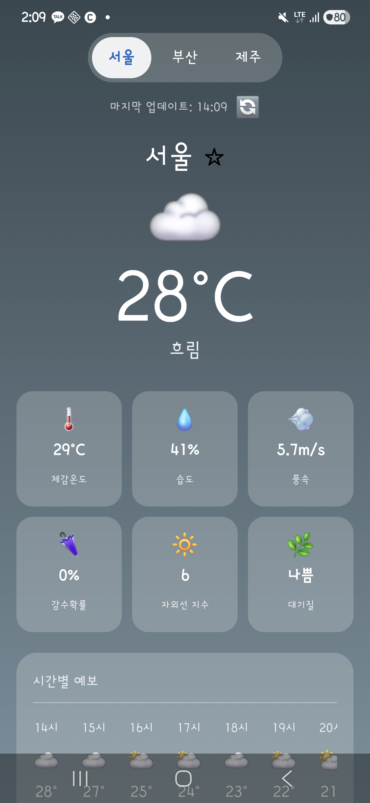
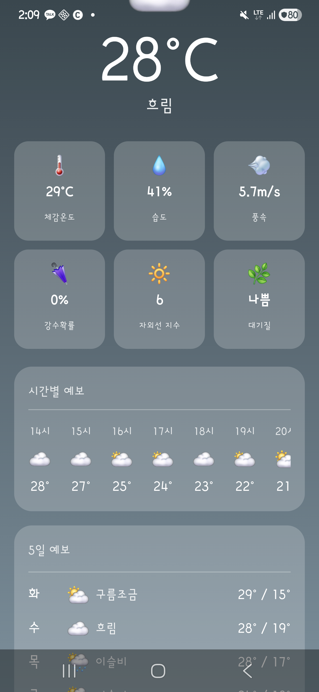
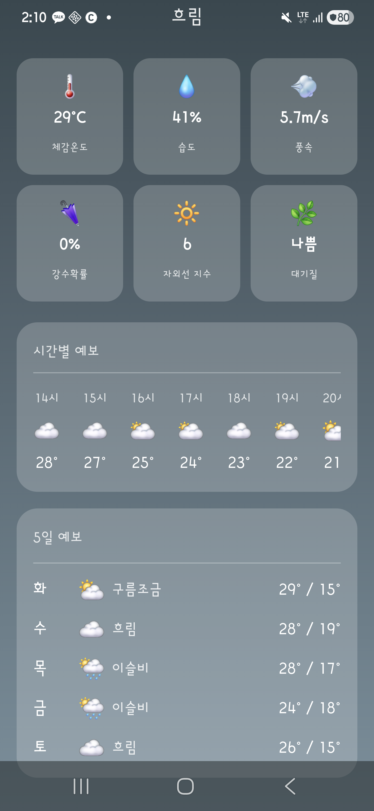
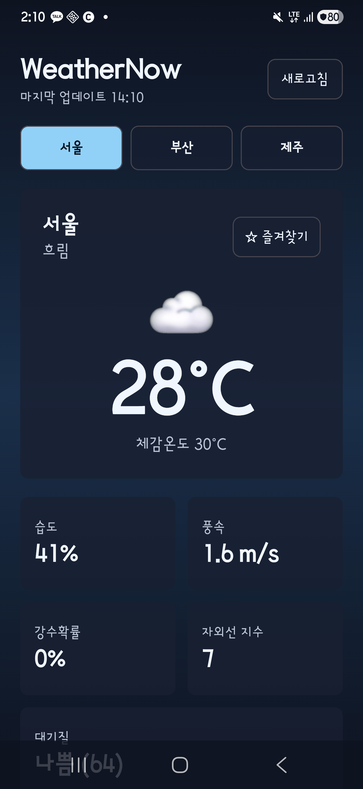
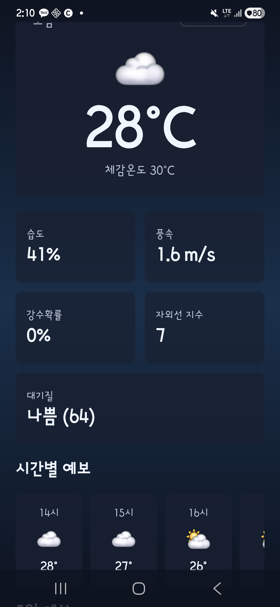
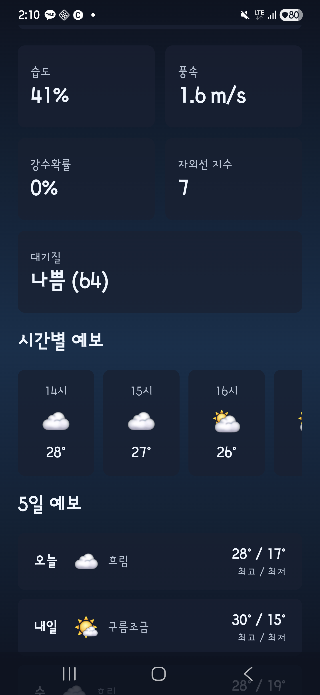
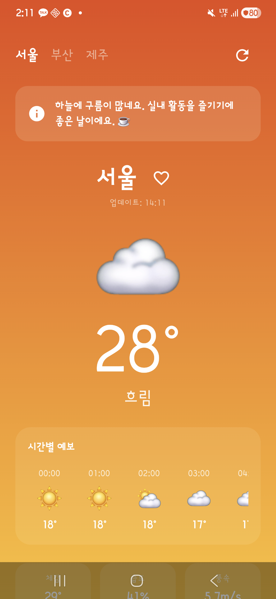
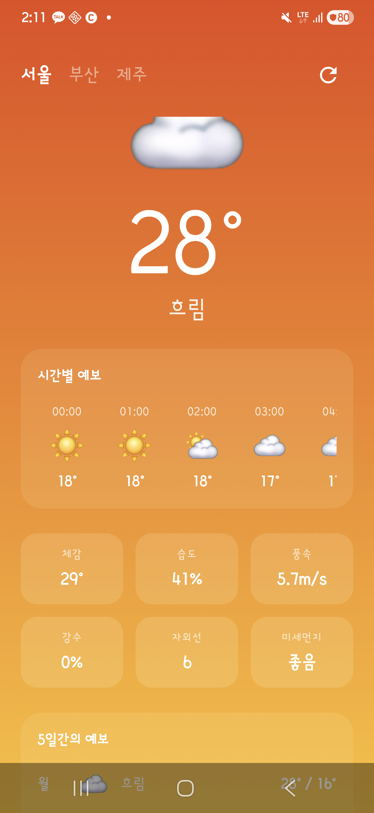
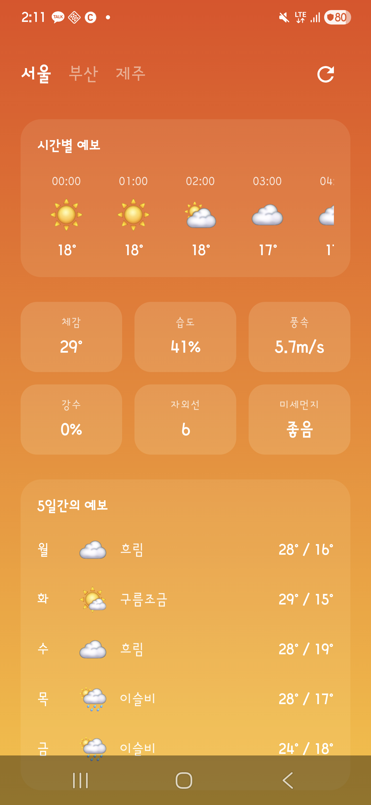

목 데이터를 Open-Meteo(무료 날씨 API 서비스) 실시간 API로 교체했습니다. Claude만 WeatherRepository 레이어(네트워크 요청을 ViewModel에서 분리한 독립 클래스)를 분리했고, 이 한 줄의 아키텍처 결정이 V5 테스트 코드량을 140줄 vs 245줄로 갈라놓았습니다. Gemini는 동일한 목표를 위해 외부 라이브러리 Retrofit(선언형 HTTP 통신 라이브러리)을 선택했고, Claude·Codex는 Android 내장 클래스만으로 처리했습니다. Cursor는 이 단계에서 무료 플랜 한도에 도달해 이후 실험에서 제외됐습니다.
동일한 요구사항(Open-Meteo API 연동)을 주었을 때 각 AI가 어떤 HTTP 라이브러리와 아키텍처를 자율적으로 선택하는지를 관찰했습니다. 프롬프트는 "목 데이터를 Open-Meteo로 교체하라"는 것 외에 라이브러리나 설계 방식을 지정하지 않았습니다.
You are upgrading the existing WeatherNow Android app in this directory. This is V4 of an AI comparison experiment. You previously built and improved this app through V1, V2, and V3. Read the existing code first, then upgrade it in place. Goal: Replace all mock data with real live weather data from the Open-Meteo API (https://api.open-meteo.com). Open-Meteo is free and requires no API key. Requirements: 1. Fetch real weather data for 서울, 부산, 제주 from Open-Meteo. 2. Preserve all features from V1/V2/V3 (city switching, current weather, 5-day forecast, hourly forecast, extra details, refresh, favorites, and any smart feature from V3). 3. Show a loading state while fetching data. 4. Show a user-visible error message if the network call fails. 5. Add INTERNET permission to AndroidManifest.xml. 6. Ensure ./gradlew assembleDebug succeeds. City coordinates for Open-Meteo: - 서울: latitude 37.5665, longitude 126.9780 - 부산: latitude 35.1796, longitude 129.0756 - 제주: latitude 33.4996, longitude 126.5312 WMO weather code reference (WMO 날씨 코드 — 세계기상기구 표준 날씨 분류, Open-Meteo uses these for weather conditions): 0=맑음 / 1=구름조금 / 2=구름많음 / 3=흐림 / 45,48=안개 / 51–55=이슬비 / 61–65=비 / 71–75=눈 / 80–82=소나기 / 95,96,99=뇌우 After implementation: - Run ./gradlew assembleDebug (안드로이드 디버그 빌드 명령어). - Briefly summarize what changed. - Confirm the build passed.
| 항목 | Claude | Codex | Gemini | Cursor |
|---|---|---|---|---|
| 모델 | claude-sonnet-4-6 | gpt-5.5 | gemini-3-flash-preview | 무료 플랜 한도 도달 |
| 소요 시간 | 536초 | 437초 | 426초 | — |
| 총 사용 토큰 | 5,262,416 (캐시 포함) | 92,991 | 2,065,397 | — |
| Kotlin 파일/라인 | 6개 / 736줄 | 6개 / 890줄 | 6개 / 716줄 | — |
| v3 대비 증가 | +156줄 (+27%) | +154줄 (+21%) | +198줄 (+38%) | — |
| 빌드 | 성공 | 성공 | 성공 | — |
| HTTP 라이브러리 | java.net.URL (Android 내장 표준) | java.net.HttpURLConnection (Android 내장 표준) | Retrofit + Gson + OkHttp(HTTP 클라이언트 라이브러리) | — |
| 신규 의존성 | 없음 | 없음 | 3개 추가 | — |
| 아키텍처 선택 | WeatherRepository 분리 | ViewModel 내부 통합 | WeatherApiService 인터페이스 | — |
| 병렬 API 호출 | async 병렬 (날씨+대기질) | async awaitAll | 순차 (Retrofit suspend) | — |
동일한 프롬프트에서 HTTP 통신 레이어를 어떻게 구성했는지 AI마다 방향이 명확히 달랐습니다. 라이브러리 선택과 레이어 분리 여부는 이 단계에서 한번 결정되면 이후 단계 전체에 영향을 줍니다.
| AI | 라이브러리 선택 | 레이어 구조 | 에러/로딩 처리 | 특이점 및 V5 이후 영향 |
|---|---|---|---|---|
| Claude | java.net.URL + org.json.JSONObject (stdlib 전용 — Android 내장, 의존성 0개) | WeatherRepository 클래스 신규 분리. ViewModel은 Repository만 호출. 네트워크 로직이 UI 레이어와 완전히 격리됨. | error: String? 상태 + 재시도 버튼. 기존 데이터 있으면 상단 진행 바 표시. | build.gradle(안드로이드 빌드 설정 파일) 변경 없이 구현. Open-Meteo 날씨 + 대기질 API async 병렬 호출. → V5에서 Repository만 Mock으로 교체하면 되어 테스트 코드 140줄로 완성. |
| Codex | java.net.HttpURLConnection (stdlib 전용 — Android 내장, 의존성 0개) | WeatherViewModel 내부에서 직접 HTTP 호출. 네트워크 로직과 UI 상태 관리가 같은 클래스에 혼재. | LoadingCard Composable + ErrorBanner Composable 신규 추가. | async awaitAll로 병렬 처리. isBusy 상태로 로딩/에러 통합 관리. → V5에서 ViewModel 전체를 테스트하려면 네트워크까지 모두 다뤄야 해 테스트 코드 245줄 필요. |
| Gemini | Retrofit 2 + Gson + OkHttp (3개 신규 추가 — 선언적 HTTP 라이브러리, 어노테이션으로 API 정의) | WeatherApiService 인터페이스 신규 파일로 분리. Retrofit이 인터페이스 구현체를 자동 생성하는 Service 패턴. | 로딩 스피너 + 에러 메시지 UI. WeatherIcon 이모지 확장 (안개, 이슬비, 소나기 추가). | libs.versions.toml + build.gradle 양쪽 수정. 가장 많은 파일 변경(7개). Retrofit은 팀 협업 프로젝트에서 API 명세를 코드로 관리하기 쉽다는 장점이 있으나, 이 실험에서는 그 이점이 드러날 규모가 아니었음. |
| Cursor | 무료 플랜 한도 도달로 미진행 — V4부터 비교 대상에서 제외됨 | |||
wind_speed_10m(현재 풍속) vs wind_gusts_10m(순간 최대 돌풍) 중 어느 필드를 매핑했느냐의 차이로 추정됩니다. 대기질도 Claude·Codex "나쁨" vs Gemini "좋음" — 날씨 API 내 공기질 필드(AQI 수치 64)를 직접 읽은 것과 별도 대기질 전용 API 엔드포인트를 호출한 것의 차이로, 동일한 도시의 공기 상태가 어떤 엔드포인트를 쓰느냐에 따라 다르게 표시될 수 있음을 보여줍니다.총 처리 토큰 중 94%(4,943,426 토큰)가 캐시 재사용입니다. Claude Code는 프롬프트 캐싱 기능으로 이전 대화 컨텍스트를 저장해두고 재전송 없이 재사용합니다. 실제 과금은 캐시 읽기 토큰이 신규 입력 토큰보다 훨씬 저렴하므로 절대값으로 비용을 직접 산정하기 어렵습니다.
Codex exec 최종 출력 'tokens used: 92,991' 기준. 캐시 없는 순수 소비 토큰으로 세 AI 중 가장 낮습니다. Claude의 신규 입력(112) + 출력(134,222) 합인 약 134,334와 비교해도 더 적습니다. 입·출력 세부 분리는 미제공.
Gemini CLI session JSONL 기준 전체 턴 합산. 입력이 2,036,455로 압도적으로 큰 이유는 매 턴마다 이전 대화 전체가 컨텍스트로 재전송되기 때문입니다. 절대값보다 Claude·Codex 대비 상대적 규모 파악 용도로 해석하는 것이 적절합니다.
V4 착수 전 무료 플랜 한도 도달. V4부터 데이터 없음.
실제 기기(ADB)에서 캡처한 화면입니다. 모든 앱이 Open-Meteo API에서 실시간 날씨 데이터를 수신하고 있습니다 (서울 28°C 흐림 · 2026-06-01 14:10 기준).









| AI | Kotlin 파일 | Kotlin 라인 | V3 대비 | 변경 파일 수 | 신규 파일 및 역할 |
|---|---|---|---|---|---|
| Claude | 6개 | 736줄 | +156줄 (+27%) | 6개 | WeatherRepository.kt — 네트워크 호출을 ViewModel에서 분리해 독립 클래스로 추출. 이 파일 덕분에 V5 테스트가 Repository만 Mock으로 교체하면 돼 140줄로 완성됨. |
| Codex | 6개 | 890줄 | +154줄 (+21%) | 5개 | 신규 파일 없음 — HTTP 호출 로직을 기존 WeatherViewModel 내부에 통합. V3에서 이미 736줄로 가장 많았고 V4에서 890줄로 더 증가. V5에서 테스트 작성 시 ViewModel 전체를 다뤄야 해 245줄 필요. |
| Gemini | 6개 | 716줄 | +198줄 (+38%) | 7개 | WeatherApiService.kt — Retrofit이 사용할 API 엔드포인트 인터페이스 선언 파일. libs.versions.toml + build.gradle도 함께 수정(의존성 3개 추가). 변경 파일 수(7개)가 셋 중 가장 많은 이유. |
| Cursor | 무료 플랜 한도 도달로 미진행 | ||||